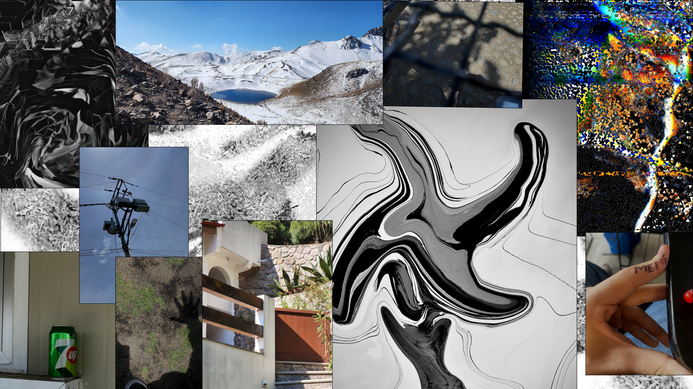

Según Sánchez Martínez (2013)
la saturación es un efecto visual denso, que dificulta la percepción crítica del espectador.
Hay una cantidad de imágenes repetidas que abruman y generan caos.
importancia de visualizar esta problemática,
reside en que el aumento masivo de imágenes, desvirtúa su función original,
desplazando el valor representativo, y convirtiéndose en un flujo de superficialidad.